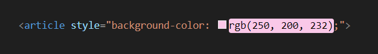

- Inline is decalration style by insert attribute in HTML tag directly 
- Embeded is declaration style in the file by code "<style>...</style>"
Internal
External
Use external file ".css" and reference css file in the HTML. This is comfortable to work with multiple file so developer can change just one time at css file.
- Reference in HTML file
- Call selector
- Selector in CSS file